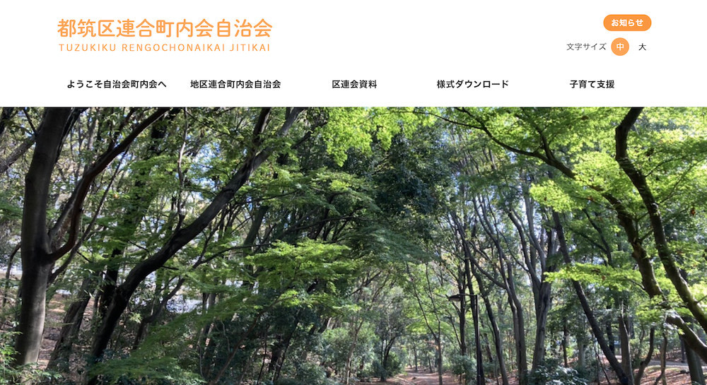

URL
担当
フロント側のデザイン・コーディング
会社 ・スタッフ構成
株式会社オークで正規社員として携わった。
チームの構成はディレクター1名/デザイナーコーダー1名/エンジニア1名
案件の定義
コーポレートサイトの作成
ターゲット
都筑区の町内会に入る人や地域の住民等
コメント
デザインカンプを作成してコーディングまで一貫して作業を担当した。
トップページデザインは自治会のホームページとのことで暖色系の色を使ったデザインとした。
コーディングルールに則ってレスポンシブルに対応するコーディングを記述した。